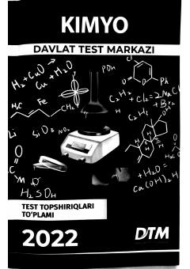

K2Kimyo fanidan 2022-yilgi kirish imtihonlari test topshiriqlari to'plami.
Ushbu to'plam O'zbekiston Respublikasi oliy ta'lim muassasalariga kirish test sinovlarida foydalanilgan kimyo fanidan test topshiriqlarini o'z ichiga oladi. Qo'llanma abituriyentlar uchun tayyorgarlik jarayonida amaliy yordam berish hamda yangi test shakllari bilan tanishtirish maqsadida tuzilgan.